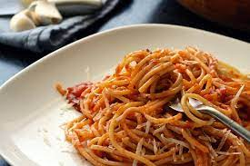
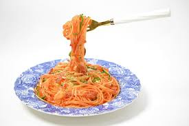
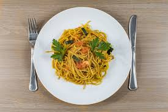
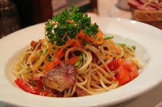

MY FAVOURITE MEAL
The fastest way to a man's heart
SPAGHETTI
Nothing excites me more like hearing Africans pronounce spaghetti as
Spag,honestly the joy of hearing the word being pronounced made me fall in
love with the meal.
-->
Ingredient and Measurement
| Ingredient |
Measurement |
| Spaghetti |
1 lb usually 1 box thin spaghetti |
| Chicken or Beef stock |
2-3 cups |
| Fresh tomatoes |
5 large about 2 lbs |
| Onion |
1 large |
| Pepper |
1 red bell pepper |
| Bonnet pepper |
2 scotch |
| Vegetable oil |
3 table spoons |
| Bouilllon powder |
2 table spoons |
| Dried thyme |
1 table spoons |
| Curry powder |
1 table spoon |
| salt to taste |
2 table spoons |
STEPS
- boil the spaghetti for 3 minutes
- blend the tomatoes,onions and peppers until smooth
-
boil the tomatoes sause in a pot for 15-25 minutes on midium
heat,until it has thicken
- stair the sause occasionally to avoid burning
- once the sause is thicken, turn into a bolw and set aside
-
add vegetable oil into a pot allow to heat,add sliced onions, salt and
stair
- pour tomatoes sause into the heated oil and stair well
- add your stock (chicken or beef)
- add thyme, Curry powder and bouillon,and stair
- taste the sause to ensure all ingredients blends well
- add the boild spaghetti,set well to fit into the pot
- add half cup of water
- stair and taste to ensure its tasty
- cover the pot and allow to cook for 8 minutes on low heat
- after 8 minutes check to make sure the pasted
- serve hot



